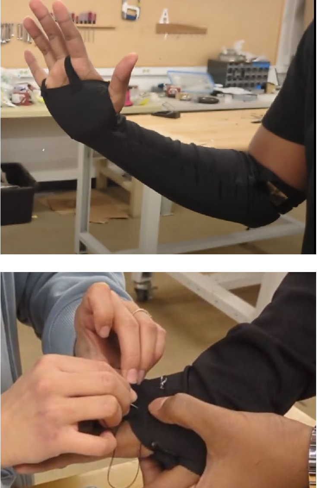
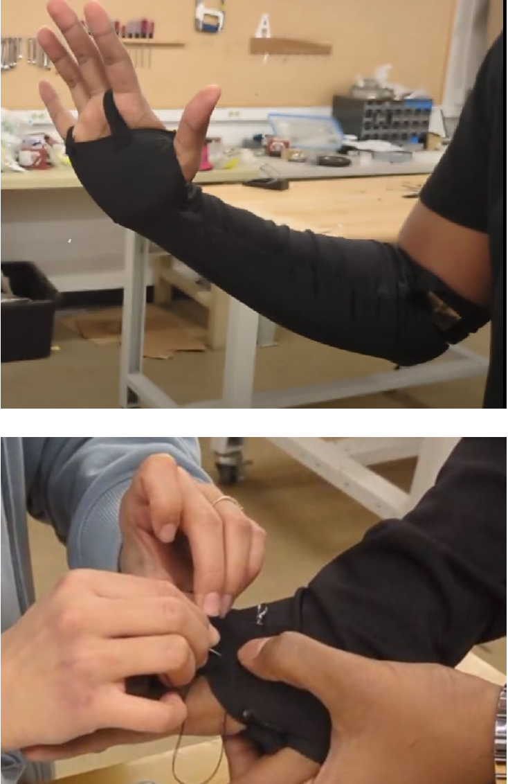
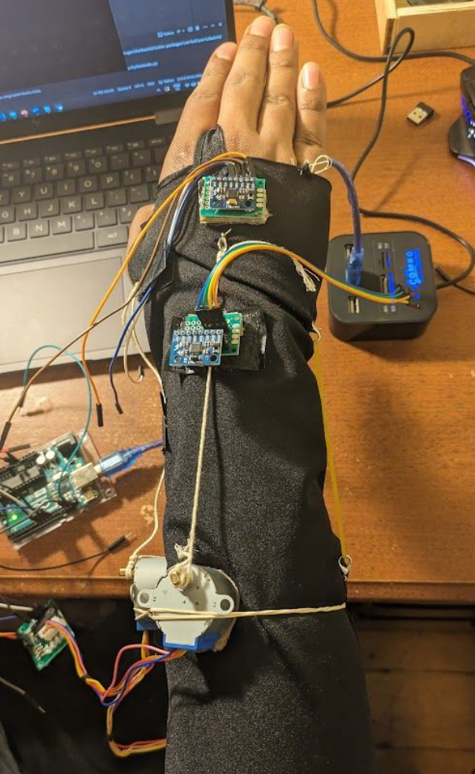
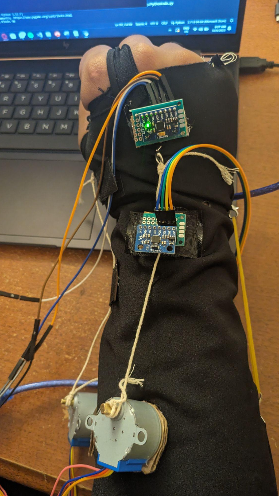

Wrist Rehabilitation Sleeve with Gamification
Rehabilitation Glove
Problem Statement
Traditional stroke recovery therapy can lead to therapist fatigue and high costs. However, robotic-assisted treatment has shown promise in improving recovery for hand impairments and reducing therapist workloads. Gamification in rehabilitation boosts patient motivation and outcomes, often exceeding traditional methods.
Design
 

Hardware

